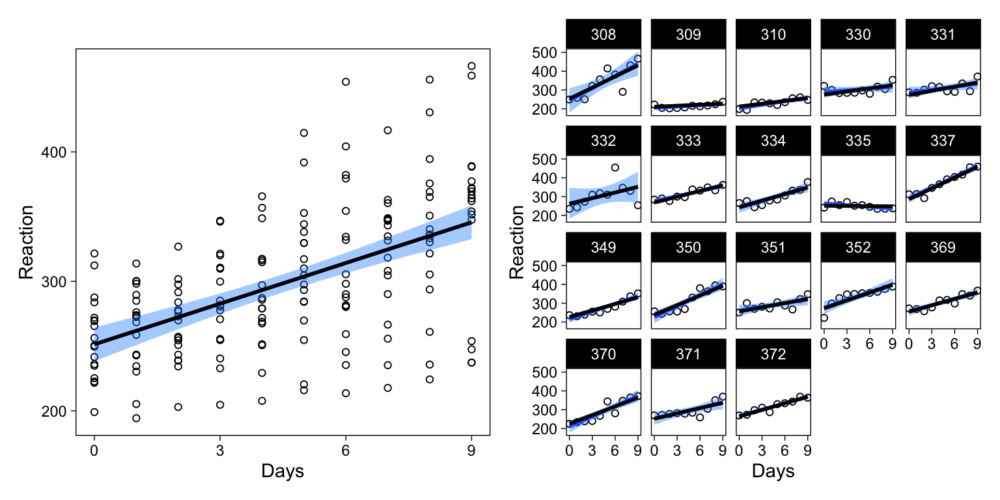
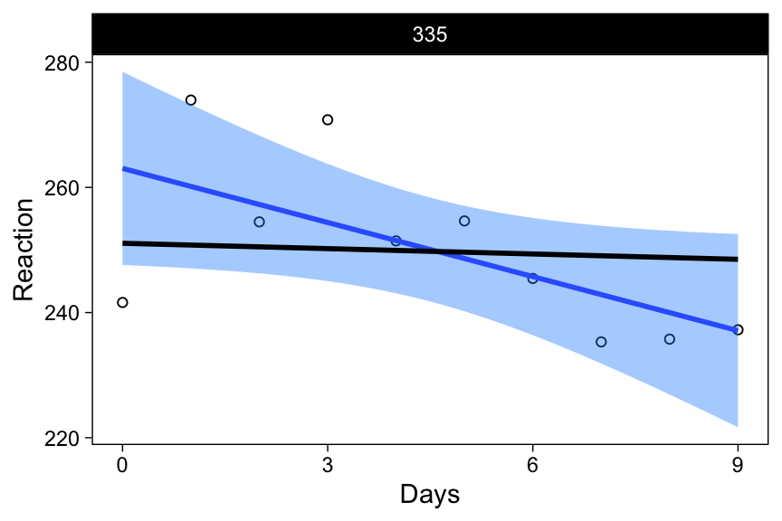
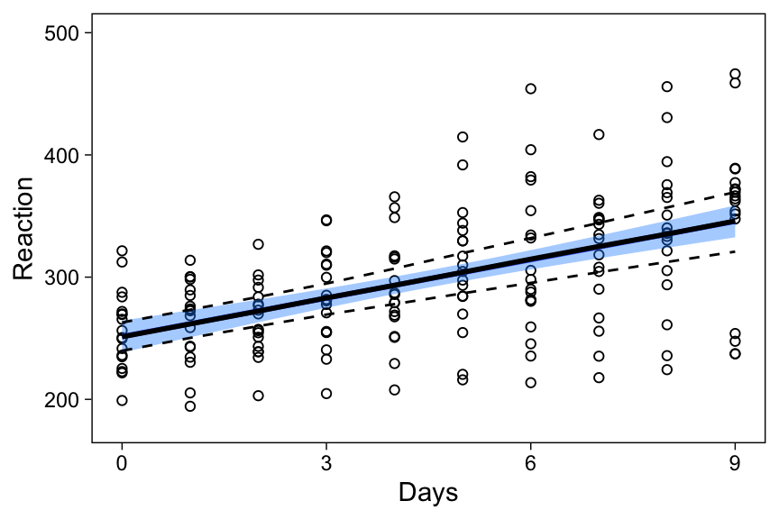
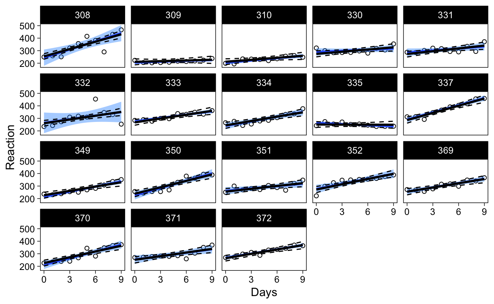
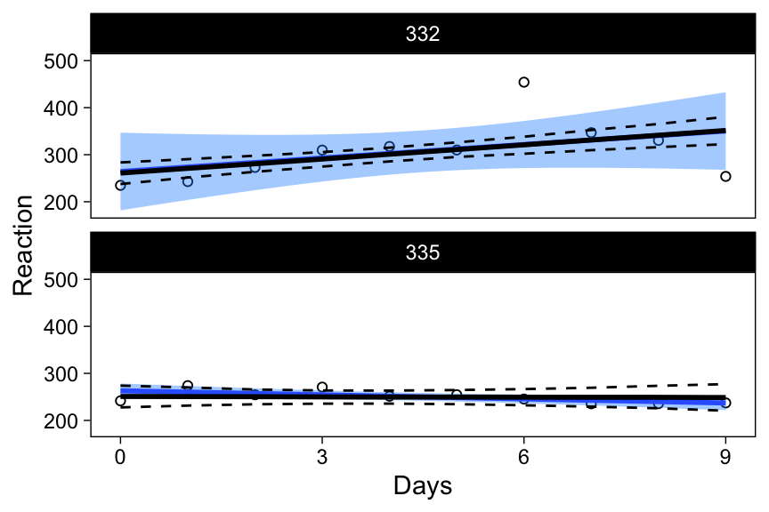
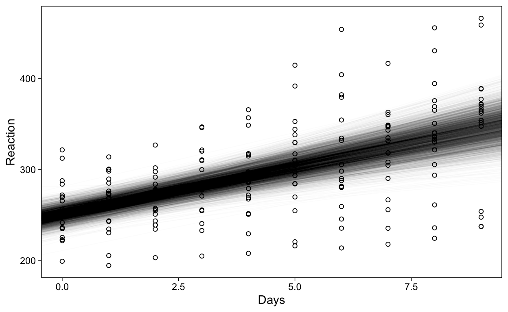
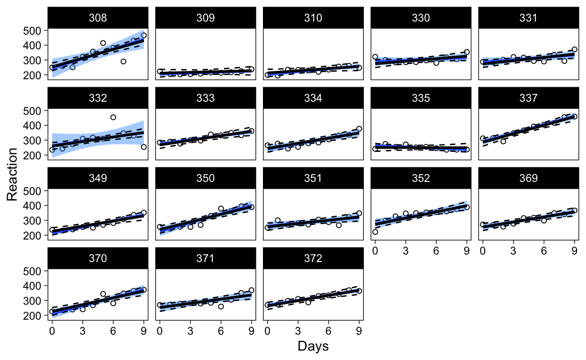
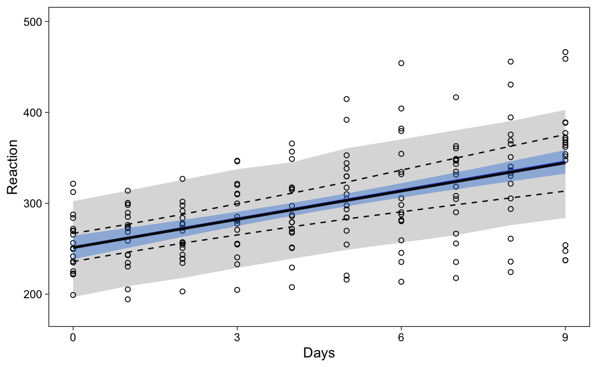
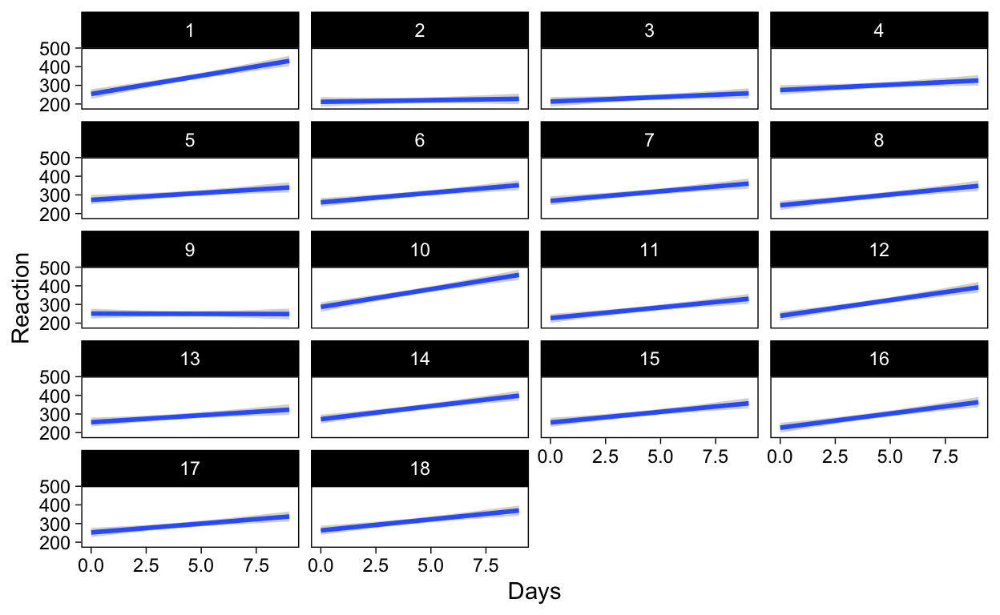

How to obtain average & individual-specific confidence limits for regression lines in a multilevel regression modeling context
In this post, I address the following problem: How to obtain regression lines and their associated confidence intervals at the average and individual-specific levels, in a two-level multilevel linear regression.
Visualization is perhaps the most effective way of communicating the results of a statistical model. For regression models, two figures are commonly used: The coefficient plot shows the coefficients of a model graphically, and can be used to replace or augment a model summary table. The advantage over tables is that it is usually faster to understand the estimated parameters by looking at them in graphical form, but the downside is losing the numerical accuracy of the table. However, both of these model summaries become increasingly difficult to interpret as the number of coefficients increases, and especially when interaction terms are included.
An alternative visualization is the line plot, which shows what the model implies in terms of the data, such as the relationship between X and Y, and perhaps how that relationship is moderated by other variables. For a linear regression, this plot displays the regression line and its confidence interval. If a confidence interval is not shown, the plot is not complete because the viewer can’t visually assess the uncertainty in the regression line, and therefore a simple line without a confidence interval is of little inferential value. Obtaining the line and confidence interval for simple linear regression is very easy, but is not straightforward in a multilevel context, the topic of this post.
Most of my statistical analyses utilize multilevel modeling, where parameters (means, slopes) are treated as varying between individuals. Because common procedures for estimating these models return point estimates for the regression coefficients at all levels, drawing expected regression lines is easy. However, displaying the confidence limits for the regression lines is not as easily done. Various options exist, and some software packages provide these limits automatically, but in this post I want to highlight a completely general approach to obtaining and drawing confidence limits for regression lines at multiple levels of analysis, and where applicable, show how various packages deliver them automatically. This general approach is inference based on probability, or bayesian statistics. In practice, obtaining random samples from the posterior distribution makes it easy to compute values such as confidence limits for any quantity of interest. Importantly, we can summarize the samples with an interval at each level of the predictor values, yielding the confidence interval for the regression line.
I will illustrate the procedure first with a maximum likelihood model fitting procedure, using the lme4 package. This procedure requires an additional step where plausible parameter values are simulated from the estimated model, using the arm package. Then, I’ll show how to obtain the limits from models estimated with Bayesian methods, using the brms R package.
We’ll use the following R packages:
I will use the sleepstudy data set from the lme4 package as an example:
“The average reaction time per day for subjects in a sleep deprivation study. On day 0 the subjects had their normal amount of sleep. Starting that night they were restricted to 3 hours of sleep per night. The observations represent the average reaction time on a series of tests given each day to each subject.”
sleepstudy <- as_tibble(sleepstudy)
| Reaction | Days | Subject |
|---|---|---|
| 249.56 | 0 | 308 |
| 258.70 | 1 | 308 |
| 250.80 | 2 | 308 |
| 321.44 | 3 | 308 |
| 356.85 | 4 | 308 |
| 414.69 | 5 | 308 |
The data is structured in a long format, where each row contains all variables at a single measurement instance.
Below, I show two kinds of scatterplots from the data. The left one represents a fixed effects regression, where information about individuals is discarded, and all that is left is a lonely band of inference in a sea of scattered observations. The right panel shows fixed effects regressions separately for each individual.
p1 <- ggplot(sleepstudy, aes(x = Days, y = Reaction)) +
geom_point(shape = 1) +
scale_x_continuous(breaks = c(0, 3, 6, 9)) +
geom_smooth(method = "lm", fill = "dodgerblue", level = .95)
p2 <- p1 + facet_wrap(~Subject, nrow = 4)
p1 | p2
Figure 1: Scatterplots with a completely pooled model (left), and individual specific models (right).
Obtaining confidence intervals for regression lines using ggplot2 is easy (geom_smooth() gives them by default), but an alternative way is to explicitly use the predict() function (which ggplot2 uses under the hood). For more complicated or esoteric models, explicit prediction becomes necessary, either using predict() or custom code.
The multilevel model I’ll fit to these data treats the intercept and effect of days as varying between individuals
\[\mathsf{reaction}_{ij} \sim \mathcal{N}(\mu_{ij}, \sigma)\]
\[\mu_{ij} = \beta_{0j} + \beta_{1j} \ \mathsf{days}_{ij}\]
\[\begin{pmatrix}{\beta_{0j}}\\{\beta_{1j}}\end{pmatrix} \sim \mathcal{N} \begin{pmatrix}{\gamma_{00}},\ {\tau_{00}}\ {\rho_{01}}\\ {\gamma_{10}},\ {\rho_{01}}\ {\tau_{10}} \end{pmatrix}\]
In this post, and the above equations, I’ll omit the discussion of hyperpriors (priors on \(\gamma\), \(\tau\) and \(\rho\) parameters.)
If the above equations baffle the mind, or multilevel models are mysterious to you, Bolger and Laurenceau (2013) and Gelman and Hill (2007) are great introductions to the topic.
I’ll estimate the multilevel model using the lme4 package.
lmerfit <- lmer(Reaction ~ Days + (Days | Subject), data = sleepstudy)
| effect | term | estimate | statistic |
|---|---|---|---|
| fixed | (Intercept) | 251.41 | 36.84 |
| fixed | Days | 10.47 | 6.77 |
The key points here are the estimates and their associated standard errors, the latter of which are missing for the varying effects’ correlations and standard deviations.
Using the model output, we can generate regression lines using the predict() function. Using this method, we can simply add a new column to the existing sleepstudy data frame, giving the fitted value for each row in the data. However, for visualization, it is very useful to generate the fitted values for specific combinations of predictor values, instead of generating a fitted value for every observation. To do this, I simply create dataframes with the relevant predictors, and feed these data frames as data to predict().
To get fitted values at the average level, when there is only one predictor, the data frame is simply a column with rows for each level of Days. For the varying effects, I create a data frame where each individual has all levels of Days, using the expand.grid() function.
# Data frame to evaluate average effects predictions on
newavg <- data.frame(Days = 0:9)
newavg$Reaction <- predict(lmerfit, re.form = NA, newavg)
# Predictors for the varying effect's predictions
newvary <- expand.grid(Days = 0:9, Subject = unique(sleepstudy$Subject))
newvary$Reaction <- predict(lmerfit, newvary)
I’ll show these predictions within the previous figures: On the left, a single fixed effects model versus the average regression line from the new multilevel model, and on the right the separate fixed effects models versus the varying regression lines from the multilevel model. Below, I use blue colors to indicate the fixed effects models’ predictions, and black for the multilevel model’s predictions.
p1 + geom_line(data = newavg, col = "black", size = 1) |
p2 + geom_line(data = newvary, col = "black", size = 1)

As you can probably tell, the fixed effects regression line (blue), and the multilevel model’s average regression line (black; left panel) are identical, because of the completely balanced design. However, interesting differences are apparent in the right panel: The varying effects’ regression lines are different from the separate fixed effects models’ regression lines. How? They are “shrunk” toward the average-level estimate. Focus on subject 335, an individual whose reaction times got faster with increased sleep deprivation:
p2 %+% filter(sleepstudy, Subject == 335) +
geom_line(data = filter(newvary, Subject == 335), col = "black", size = 1)

Estimating each participant’s data in their very own model (separate fixed effects models) resulted in a predicted line suggesting to us that this person’s cognitive performance is enhanced following sleep deprivation (blue line with negative slope).
However, if we used a model where this individual was treated as a random draw from a population of individuals (the multilevel model; black line in the above figure), the story is different. The point estimate for the slope parameter, for this specific individual, from this model (-0.28) tells us that the estimated decrease in reaction times is quite a bit smaller. But this is just a point estimate, and in order to draw inference, we’ll need standard errors, or some representation of the uncertainty, in the estimated parameters. The appropriate uncertainty representations will also allow us to draw the black lines with their associated confidence intervals. I’ll begin by obtaining a confidence interval for the average regression line.
The method I will illustrate in this post relies on random samples of plausible parameter values, from which we can then generate regression lines–or draw inferences about the parameters themselves. These regression lines can then be used as their own distribution with their own respective summaries, such as an X% interval. First, I’ll show a quick way for obtaining these samples for the lme4 model, using the arm package to generate simulated parameter values.
The important parts of this code are:
sims <- sim(lmerfit, n.sims = 1000) # 1
fs <- fixef(sims) # 2
newavg <- data.frame(Days = 0:9)
Xmat <- model.matrix(~ 1 + Days, data = newavg) # 3
fitmat <- matrix(ncol = nrow(fs), nrow = nrow(newavg)) # 4
for (i in 1:nrow(fs)) {
fitmat[, i] <- Xmat %*% as.matrix(fs)[i, ]
} # 5
newavg$lower <- apply(fitmat, 1, quantile, prob = 0.05) # 6
newavg$median <- apply(fitmat, 1, quantile, prob = 0.5) # 6
newavg$upper <- apply(fitmat, 1, quantile, prob = 0.95) # 6
p1 + geom_line(data = newavg, aes(y = median), size = 1) +
geom_line(data = newavg, aes(y = lower), lty = 2) +
geom_line(data = newavg, aes(y = upper), lty = 2)

Again, the multilevel model’s average regression line and the fixed effect model’s regression line are identical, but the former has a wider confidence interval (black dashed lines.)
The code snippet generalizes well to be used with any two matrices where one contains predictor values (the combinations of predictor values on which you want to predict) and the other samples of parameter values, such as a posterior distribution from a Bayesian model, as we’ll see below. This procedure is described in Korner-Nievergelt et al. (2015), who give a detailed explanation of the code and on drawing inference from the results.
The fitted() function in arm returns fitted values at the varying effects level automatically, so we can skip a few lines of code from above to obtain confidence intervals at the individual-level:
yhat <- fitted(sims, lmerfit)
sleepstudy$lower <- apply(yhat, 1, quantile, prob = 0.025)
sleepstudy$median <- apply(yhat, 1, quantile, prob = 0.5)
sleepstudy$upper <- apply(yhat, 1, quantile, prob = 0.975)
p2 + geom_line(data = sleepstudy, aes(y = median), size = 1) +
geom_line(data = sleepstudy, aes(y = lower), lty = 2) +
geom_line(data = sleepstudy, aes(y = upper), lty = 2)

A subset of individuals highlights the most interesting differences between the models:
tmp <- filter(sleepstudy, Subject %in% unique(sleepstudy$Subject)[c(6, 9)])
p2 %+% tmp +
geom_line(data = tmp, aes(y = median), size = 1) +
geom_line(data = tmp, aes(y = lower), lty = 2) +
geom_line(data = tmp, aes(y = upper), lty = 2)

In the top panel, the unique fixed effects model’s confidence band is much wider than the confidence band from the multilevel model, highlighting the pooling of information in the latter model. Similarly, the bottom panel (individual 9 discussed above) shows that 95% plausible regression lines for that individual now include lines that increase as a function of days of sleep deprivation, and indeed the expected regression line for this individual is nearly a flat line.
In the next sections, we’ll apply this method of obtaining regression line confidence intervals for multilevel models estimated with Bayesian methods.
Confidence intervals are commonly called credible intervals in the Bayesian context, but I’ll use these terms interchangeably. The reader should be aware that, unlike traditional confidence intervals, credible intervals actually allow statements about credibility. In fact, being allowed to say the things we usually mean when discussing confidence intervals is one of many good reasons for applying bayesian statistics.
I use brms to specify the model and sample from the posterior distribution.
brmfit <- brm(
data = sleepstudy,
Reaction ~ Days + (Days | Subject),
family = gaussian,
iter = 2000,
chains = 4,
file = "sleepstudy"
)
| Estimate | Est.Error | l-95% CI | u-95% CI | Tail_ESS | |
|---|---|---|---|---|---|
| Intercept | 251.23 | 7.73 | 235.84 | 266.78 | 2442 |
| Days | 10.37 | 1.68 | 7.16 | 13.59 | 2194 |
Note that now we also have values for the uncertainties associated with the varying effect parameters, without additional code.
brms has a function for obtaining fitted values (fitted()) and their associated upper and lower bounds, which together constitute the regression line and its confidence interval.
newavg <- data.frame(Days = 0:9)
fitavg <- cbind(newavg, fitted(brmfit, newdata = newavg, re_formula = NA)[, -2])
p3 <- p1 +
geom_line(data = fitavg, aes(y = Estimate), col = "black", size = 1) +
geom_line(data = fitavg, aes(y = Q2.5), col = "black", lty = 2) +
geom_line(data = fitavg, aes(y = Q97.5), col = "black", lty = 2)
p3
The average effects’ estimates in this model have higher uncertainty than in the lmerfit model above, explaining why the average regression line’s CI is also wider.
Instead of showing summaries of the samples from the posterior distribution, one could also plot the entire distribution–at the risk of overplotting. Overplotting can be avoided by adjusting each regression line’s transparency with the alpha parameter, resulting in a visually attractive–maybe?–display of the uncertainty in the regression line:
pst <- posterior_samples(brmfit, "b")
ggplot(sleepstudy, aes(x = Days, y = Reaction)) +
geom_point(shape = 1) +
geom_abline(
data = pst, alpha = .01, size = .4,
aes(intercept = b_Intercept, slope = b_Days)
)

The best part is, brms’ fitted() also gives regression lines with CIs at the individual level.
X <- cbind(sleepstudy[, 1:3], fitted(brmfit)[, -2]) %>% as_tibble()
p2 + geom_line(data = X, aes(y = Estimate), size = 1) +
geom_line(data = X, aes(y = Q2.5), lty = 2) +
geom_line(data = X, aes(y = Q97.5), lty = 2)

Working with brms makes it very easy to obtain CIs for regression lines at both levels of analysis.
It might be useful, especially for model checking purposes, to display not only the fitted values, but also what the model predicts. To display the 95% prediction interval, I use the same procedure, but replace fitted() with predict():
newavg <- data.frame(Days = 0:9)
predavg <- cbind(newavg, predict(brmfit, newdata = newavg, re_formula = NA)[, -2])
names(predavg) <- c("Days", "Reaction", "lower", "upper")
p3 + geom_ribbon(
data = predavg, aes(ymin = lower, ymax = upper),
col = NA, alpha = .2
)

brms also has a function conditional_effects() that makes drawing these plots easy. Here is how to draw the average effect (first), and subject-specific effects (latter).
conditional_effects(brmfit)
conditional_effects(
brmfit,
conditions = distinct(sleepstudy, Subject),
re_formula = NULL
)

Working with a matrix of plausible parameter values makes it easier to draw regression lines with confidence intervals. Specifically, the brms package provides easy access to CIs in a multilevel modeling context.
The following software packages were used in this blog post: R [Version 4.0.3; R Core Team (2020)] and the R-packages arm [Version 1.11.2; Gelman and Su (2020)], brms [Version 2.14.4; Bürkner (2017); Bürkner (2018)], broom [Version 0.7.5.9000; Robinson, Hayes, and Couch (2021); Bolker and Robinson (2020)], broom.mixed [Version 0.2.6; Bolker and Robinson (2020)], dplyr [Version 1.0.4; Wickham et al. (2021)], forcats [Version 0.5.1; Wickham (2021a)], ggplot2 [Version 3.3.3; Wickham (2016)], kableExtra [Version 1.3.4; Zhu (2021)], knitr [Version 1.31; Xie (2015)], lme4 [Version 1.1.26; Bates et al. (2015)], MASS [Version 7.3.53.1; Venables and Ripley (2002)], Matrix [Version 1.3.2; Bates and Maechler (2021)], metafor [Version 2.4.0; Viechtbauer (2010)], patchwork [Version 1.1.1; Pedersen (2020)], purrr [Version 0.3.4; Henry and Wickham (2020)], Rcpp [Version 1.0.6; Eddelbuettel and François (2011); Eddelbuettel and Balamuta (2018)], readr [Version 1.4.0; Wickham and Hester (2020)], scales [Version 1.1.1; Wickham and Seidel (2020)], stringr [Version 1.4.0; Wickham (2019)], tibble [Version 3.1.0; Müller and Wickham (2021)], tidyr [Version 1.1.3; Wickham (2021b)], and tidyverse [Version 1.3.0; Wickham et al. (2019)].
If you see mistakes or want to suggest changes, please create an issue on the source repository.
Text and figures are licensed under Creative Commons Attribution CC BY 4.0. Source code is available at https://github.com/mvuorre/mvuorre.github.io, unless otherwise noted. The figures that have been reused from other sources don't fall under this license and can be recognized by a note in their caption: "Figure from ...".
For attribution, please cite this work as
Vuorre (2016, March 6). Statistics and Data Science Tutorials: Confidence intervals in multilevel models. Retrieved from https://mvuorre.github.io/posts/2016-03-06-multilevel-predictions/
BibTeX citation
@misc{vuorre2016confidence,
author = {Vuorre, Matti},
title = {Statistics and Data Science Tutorials: Confidence intervals in multilevel models},
url = {https://mvuorre.github.io/posts/2016-03-06-multilevel-predictions/},
year = {2016}
}